LMS IPAS · Media belajar IPA SD Kelas 4–6 yang berjalan tanpa internet
Buku ini untuk Bapak/Ibu guru yang akan memakai LMS IPAS di kelas. Tidak perlu paham komputer: ikuti langkahnya satu per satu. Simpan buku ini di dekat laptop, atau cetak halaman terakhir (Kartu Ringkas) dan tempel di meja guru.
Kontak yang bisa dihubungi bila ada masalah (pengelola/operator):
LMS IPAS versi 1.0 · Materi sesuai Capaian Pembelajaran IPAS Kurikulum Merdeka (Fase B dan C).
LMS IPAS adalah aplikasi belajar IPA untuk kelas 4, 5, dan 6. Isinya sudah lengkap: 19 materi dengan gambar, animasi, percobaan, diskusi, rangkuman, dan 114 soal. Guru tinggal memilih materi lalu menayangkannya di layar kelas.
Satu laptop guru menjadi "laptop server", yaitu tempat LMS dinyalakan. Perangkat lain membukanya lewat Wi-Fi yang sama. Tidak perlu internet, cukup Wi-Fi sekolah atau hotspot HP.
| Istilah | Artinya | |
|---|---|---|
| Laptop server | Laptop tempat LMS dipasang dan dinyalakan. Selama pelajaran, laptop ini harus menyala. | |
| Jendela hitam | Jendela yang muncul saat LMS dinyalakan. Inilah "mesin" LMS. Jangan ditutup selama LMS dipakai. Boleh diperkecil (minimize). | |
| Alamat LMS | Seperti alamat rumah untuk LMS, misalnya http://192.168.1.10:3000. Dipakai HP dan smartboard untuk membuka LMS. Lebih mudah dengan memindai kode QR. | |
Seperti inilah jendela hitam saat LMS berjalan dengan benar:
Hampir semua fitur jalan tanpa internet. Hanya dua hal yang butuh internet: Buat soal dengan AI, dan mengisi Google Form (soal online).
Cukup dilakukan satu kali di laptop server, oleh guru atau operator yang ditunjuk. Waktu: sekitar 5 menit. Tidak perlu internet.
LMS-IPAS-Setup.exe dan LMS-IPAS.zip (lewat flashdisk, Google Drive, atau WhatsApp). Cukup pakai salah satu: coba Cara A dulu; bila diblokir Windows, pakai Cara B.LMS-IPAS-Setup.exe (atau salin dari flashdisk). Jika browser menulis "isn't commonly downloaded": klik ⋯ (titik tiga) → Keep → Show more → Keep anyway.LMS-IPAS-Setup.exe.C:\LMS-IPAS dan ketiga centang apa adanya, lalu klik Pasang.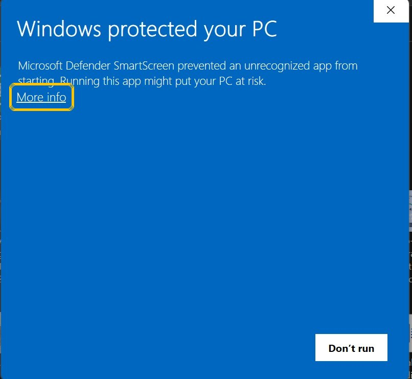
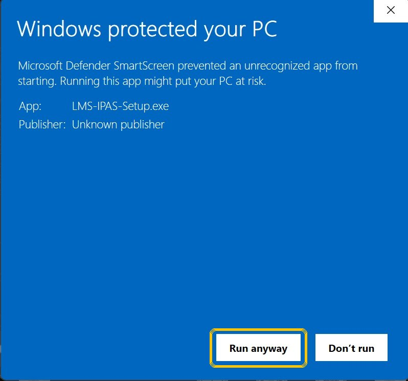
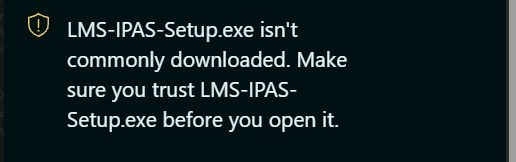
LMS-IPAS.zip → pilih Extract All… → klik Extract.C:\LMS-IPAS.Akun guru bawaan juga tersedia: guru / guru123 (juga wajib ganti sandi).
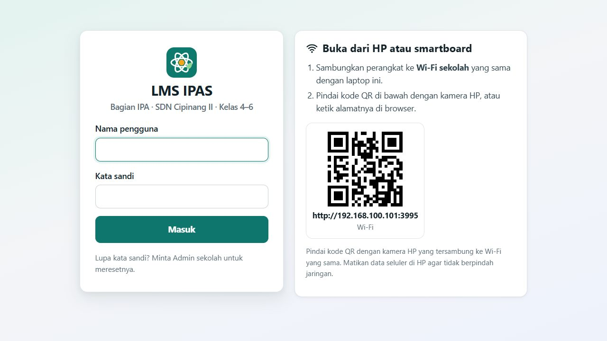
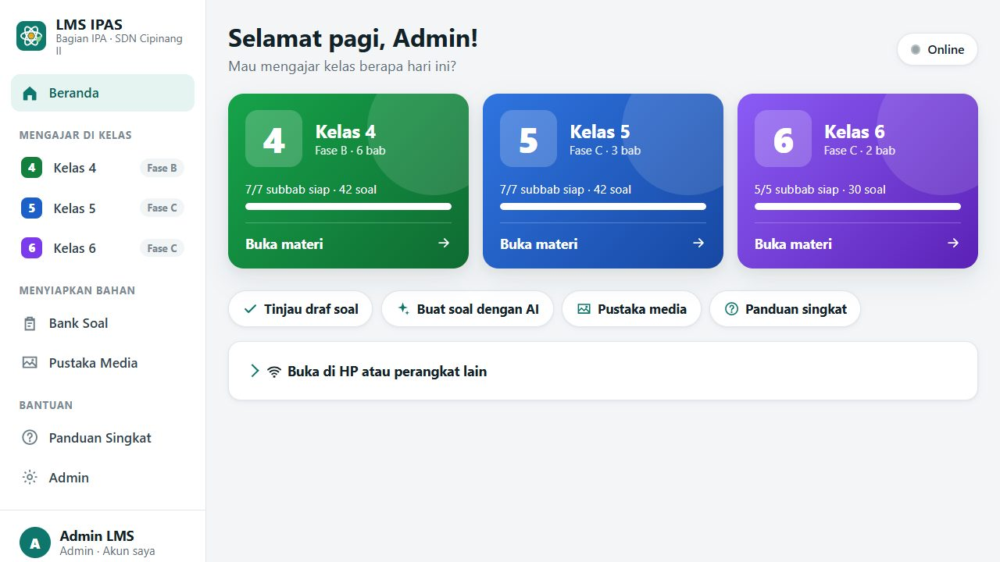
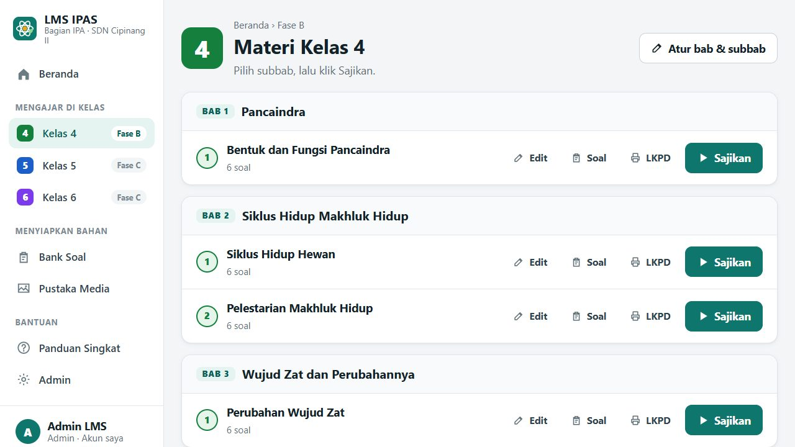
Setiap materi tersusun dari 10 layar dengan urutan yang sama. Ikon di pojok kiri atas menunjukkan tahap pelajaran:
| Layar | Isi | Yang dilakukan guru |
|---|---|---|
| 🤔 Pemantik | Gambar + pertanyaan pembuka | Ajak siswa menebak. Belum perlu jawaban benar. |
| 🎯 Tujuan | Hal yang akan dipelajari | Bacakan bersama. |
| 🔍 Pengamatan | Percobaan sederhana | Bagi kelompok, ikuti langkah di layar. |
| 💡 Penjelasan (2 layar) | Konsep + animasi interaktif | Klik tombol di animasi bersama siswa. |
| 🏡 Contoh | Contoh di sekitar siswa | Minta siswa menambah contoh lain. |
| 💬 Diskusi | Pertanyaan berkelompok | Buka Petunjuk satu per satu; Buka kunci di akhir. |
| 📝 Rangkuman | Poin penting | Siswa mencatat. |
| 💭 Refleksi | Pertanyaan renungan | Siswa menjawab di buku. |
| 🏆 Penilaian | Soal latihan | Pakai Tayangkan soal satu per satu (kuis). |
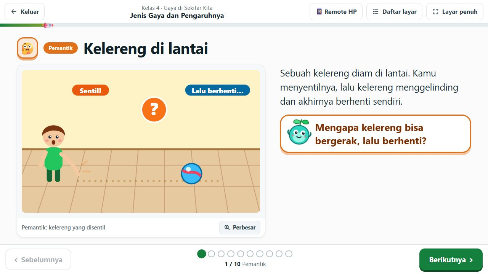
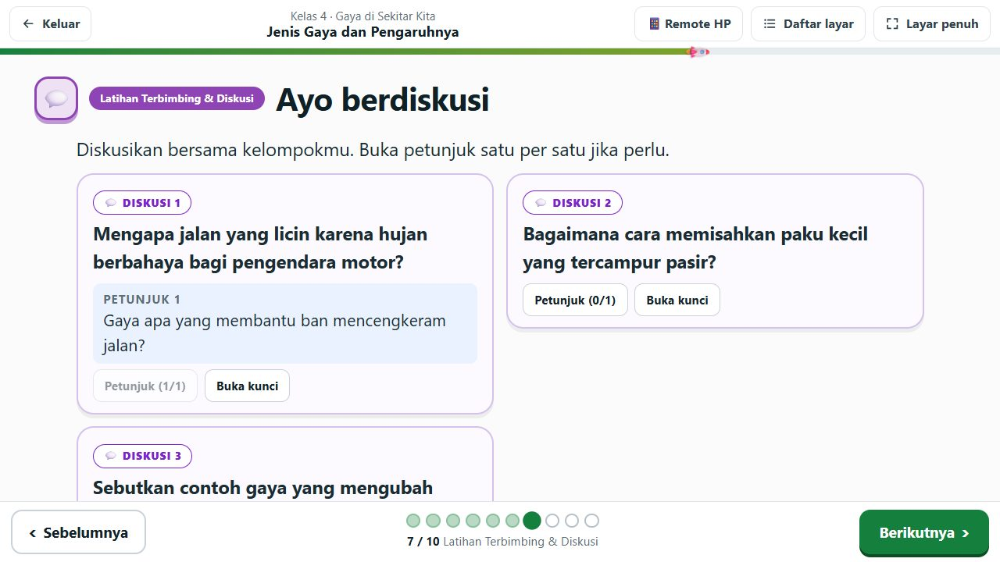
Dengan Remote HP, guru bisa berjalan di kelas sambil memindah layar dari HP. HP juga menampilkan kunci jawaban yang hanya terlihat oleh guru.
Tanpa kamera? Buka alamat yang tertulis di layar (misalnya http://192.168.1.10:3000/remote) lalu ketik 4 angka kodenya.
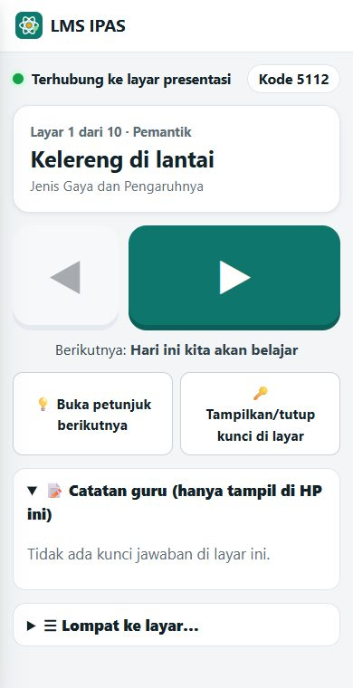
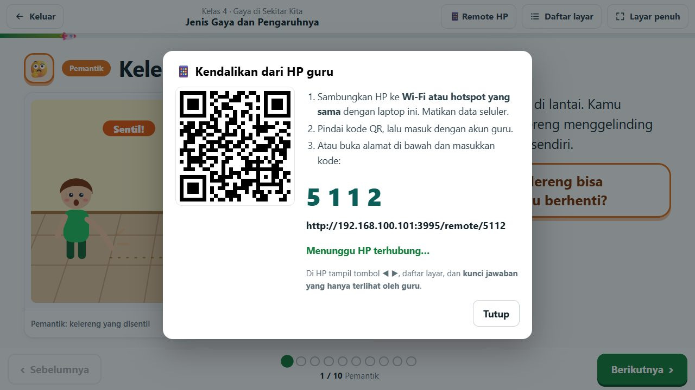
Soal ditayangkan satu per satu dengan huruf besar, waktu hitung mundur, suara, dan skor kelas. Seperti permainan kuis.
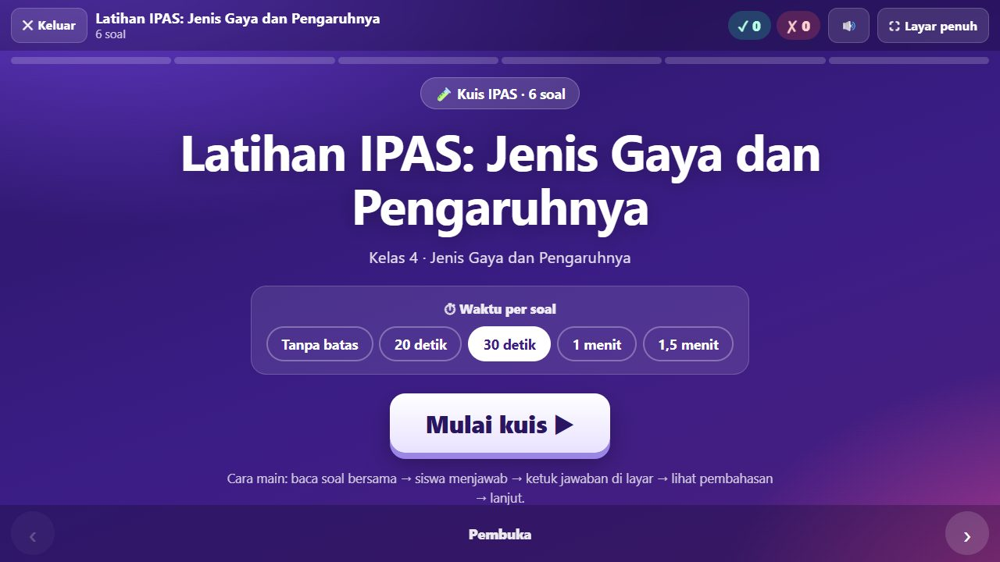
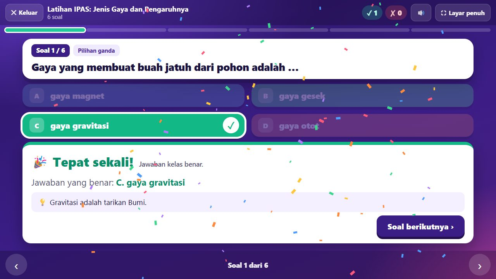
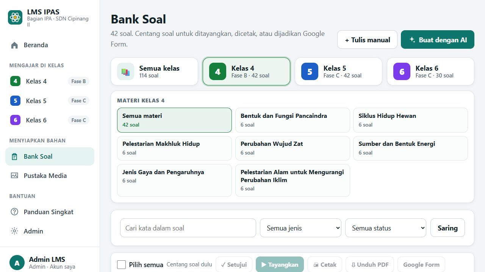
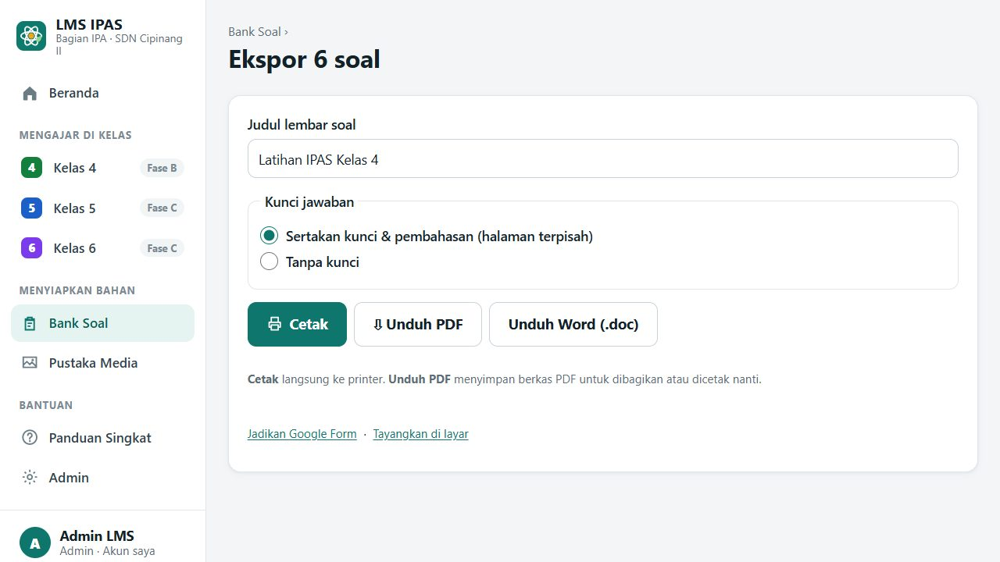
LKPD dibuat otomatis dari kegiatan pada materi: prediksi, langkah percobaan, tabel pengamatan, pertanyaan diskusi, dan refleksi.
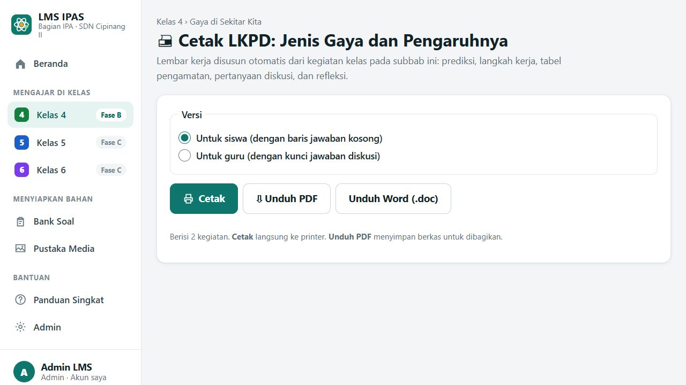
Semua materi sudah terisi. Guru boleh menyesuaikannya dengan kondisi kelas, misalnya mengganti gambar dengan foto lingkungan sekolah sendiri.
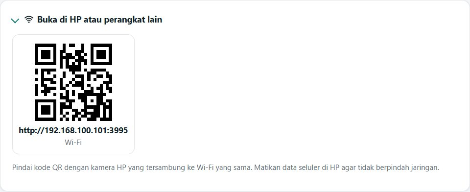
Menu Admin → Pengguna. Di sini Admin bisa membuat akun guru, mereset kata sandi guru yang lupa, dan menonaktifkan akun guru yang sudah pindah.
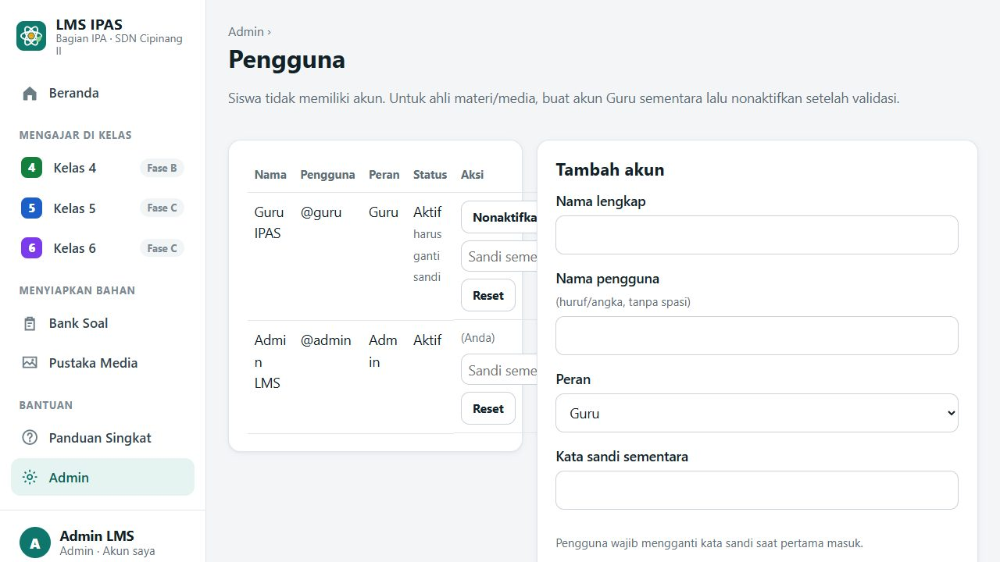
Backup menyimpan semua data: akun, materi yang diubah, soal, gambar, dan video. Jika laptop rusak atau hilang, data bisa dikembalikan dari backup.
.zip akan terunduh. Salin ke flashdisk atau Google Drive, jangan hanya disimpan di laptop yang sama.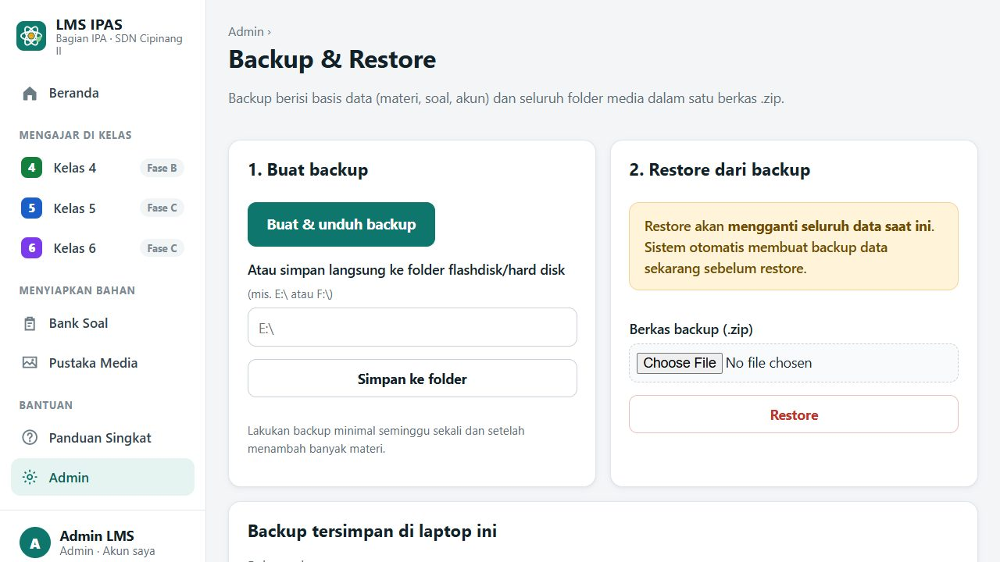
Menu Admin → Pengaturan: nama sekolah, kunci Buat Soal AI (Gemini), dan batas pemakaian AI per hari.
C:\LMS-IPAS.data di dalam C:\LMS-IPAS.| Yang terlihat | Artinya | Yang harus dilakukan |
|---|---|---|
| Menyalakan LMS | ||
| Saat mengunduh: "isn't commonly downloaded" | Browser berhati-hati dengan berkas baru. | Klik ⋯ → Keep → Show more → Keep anyway. |
| Muncul layar biru "Windows protected your PC" | Windows berhati-hati dengan aplikasi baru. | Jangan klik "Don't run". Klik tulisan kecil More info → tombol Run anyway. Hanya perlu sekali. Lihat gambar di Bagian 2. |
| "An Application Control policy has blocked this file" atau "Smart App Control blocked" | Windows 11 memblokir berkas .exe. | Pakai Cara B (Bagian 2): LMS-IPAS.zip dan PASANG-LMS.bat. Cara ini tidak diblokir. |
| Jendela hitam: "LMS IPAS SUDAH BERJALAN di jendela lain" | LMS sudah menyala sebelumnya. | Tidak apa-apa. Pakai browser yang terbuka. Jendela baru menutup sendiri. |
| Jendela hitam: "Port 3000 sedang dipakai aplikasi lain" | Ada aplikasi lain yang memakai "pintu" LMS. | Tutup aplikasi lain yang sedang berjalan, atau restart laptop, lalu nyalakan LMS lagi. |
| Jendela hitam menampilkan tulisan Error lalu "Server berhenti" | LMS gagal menyala. | Foto seluruh isi jendela hitam, kirim ke pengelola. Sementara itu coba restart laptop lalu nyalakan LMS lagi. |
| Di laptop server: "This site can't be reached" / localhost refused to connect | LMS belum menyala, atau jendela hitam tertutup. | Klik dua kali ikon LMS IPAS, tunggu 5 detik, lalu muat ulang browser. |
| Ikon LMS IPAS di Desktop hilang | Pintasan terhapus. LMS masih ada. | Klik Start, ketik LMS IPAS, lalu buka. Atau buka C:\LMS-IPAS\mulai-server.bat. |
| Membuka di HP, smartboard, atau laptop lain | ||
| "This site can't be reached" / "took too long to respond" | Perangkat tidak menemukan laptop server. | 1) Pastikan Wi-Fi sama dan data seluler HP mati. 2) Pakai alamat terbaru dari Beranda (alamat bisa berubah). 3) Periksa angka alamat (sering salah ketik). 4) Di laptop server jalankan C:\LMS-IPAS\izinkan-akses-jaringan.bat → Yes. |
| Langkah di atas sudah dicoba, tetap tidak bisa | Wi-Fi itu melarang perangkat saling terhubung (biasa di Wi-Fi kantor/kampus). | Nyalakan hotspot HP (tidak perlu kuota), sambungkan laptop server dan perangkat lain ke hotspot itu. |
| "Connection was interrupted" / "network change was detected" | Laptop baru saja berganti Wi-Fi. | Tunggu beberapa detik, lalu buka alamat terbaru dari Beranda. |
| Remote HP: layar putih/hitam atau terus memuat | HP tidak terhubung ke laptop server. | Sama seperti di atas: Wi-Fi sama, data seluler mati. Tutup jendela Remote di laptop lalu klik 📱 Remote HP lagi untuk kode baru. |
| Remote HP: "Kode tidak ditemukan" | Kode lama (LMS sempat dinyalakan ulang). | Di layar presentasi klik 📱 Remote HP lagi, pindai QR yang baru. |
| Remote HP: "Layar presentasi tidak terhubung" | Halaman presentasi di laptop sudah ditutup. | Buka lagi materi dengan Sajikan di laptop. |
| Saat mengajar | ||
| Tampilan berantakan atau tombol tidak bisa diklik | Browser memakai tampilan lama. | Tekan Ctrl + F5. |
| Video tersendat di HP | Video terlalu besar atau Wi-Fi lemah. | Pakai video 720p atau 480p, dekatkan router ke kelas, atau tayangkan dari laptop server saja. |
| PDF tidak tampil di HP | Beberapa HP tidak bisa menampilkan PDF di halaman. | Klik tombol Buka / Unduh di bawah PDF. |
| "PPT ini belum bisa ditayangkan langsung" | PowerPoint perlu diubah ke PDF. | Di PowerPoint: File → Save As → PDF, lalu unggah PDF-nya. |
| Suara kuis tidak terdengar | Suara dimatikan. | Klik tombol 🔊 di pojok kanan atas kuis, dan periksa volume laptop. |
| Soal, cetak, dan AI | ||
| "PDF gagal dibuat" atau "butuh Microsoft Edge" | Laptop tidak punya browser Edge/Chrome. | Pakai Cetak, lalu pilih printer "Save as PDF / Microsoft Print to PDF". |
| Soal tidak muncul di layar Penilaian | Soal masih berstatus Draf. | Bank Soal → periksa soal → klik ✓ Setujui. |
| Buat soal AI: "Butuh internet" | Laptop server tidak terhubung internet. | Sambungkan laptop server ke Wi-Fi yang ada internetnya atau hotspot HP, klik Periksa ulang. Atau tulis soal manual. |
| Buat soal AI: "belum diaktifkan" / "kunci API bermasalah" | Kunci AI belum diisi atau salah. | Admin → Pengaturan → isi kunci API Gemini (butuh internet). |
| Buat soal AI: "Server AI Google sedang sangat sibuk" | Layanan Google penuh. Bukan masalah laptop. | Tunggu 1–5 menit, lalu klik Buat soal lagi. |
| Akun dan data | ||
| Guru lupa kata sandi | - | Admin → Pengguna → isi sandi sementara pada guru itu → Reset. |
| Admin lupa kata sandi | - | Di laptop server, buka folder C:\LMS-IPAS, klik dua kali reset-sandi-admin.bat, ketik Y lalu Enter. Masuk dengan admin / admin123, lalu ganti sandinya. |
| "Nama pengguna atau kata sandi salah" | Salah ketik, atau tombol Caps Lock menyala. | Periksa huruf besar/kecil, matikan Caps Lock, coba lagi. |
| Materi atau soal hilang / laptop rusak | Data terhapus atau laptop bermasalah. | Pasang LMS di laptop (pengganti), lalu Admin → Backup & Restore → pilih berkas backup terakhir → Restore. |
C:\LMS-IPAS.| Nama guru | Nama pengguna | Kelas yang diajar |
|---|---|---|
Jangan menulis kata sandi di buku yang mudah dilihat siswa.
Tempel di dekat laptop server
C:\LMS-IPAS\reset-sandi-admin.bat.Admin → Backup & Restore → Buat backup → salin ke flashdisk.
Akun awal: admin / admin123 · guru / guru123
(wajib diganti saat pertama masuk)